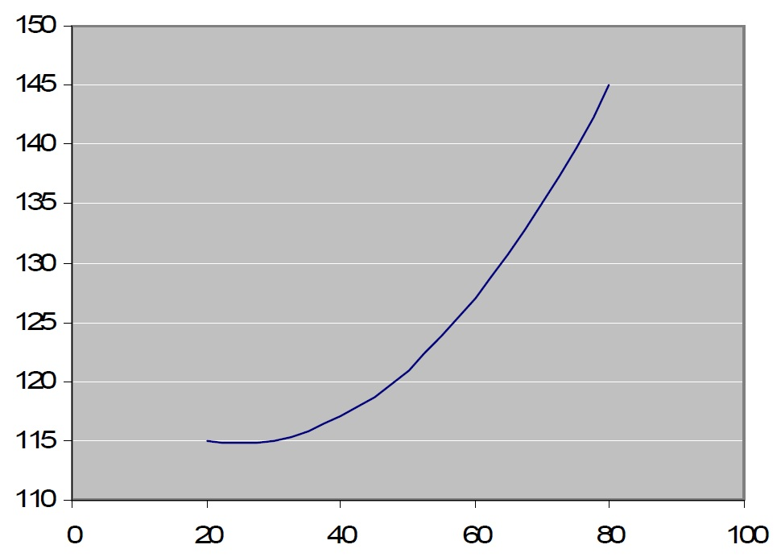

Lead Author(s): Peter Bacchetti, PhD
A polynomial model is used in regression models to allow a predictor to have a non-linear effect on the outcome. This is useful when there is evidence against the linearity assumption or when high interest in the predictor warrants more flexible modeling of its effect. To fit this type of model, we create new predictors that are equal to the original predictor raised to a power, and we then include the original predictor and the new predictors in the model.
For example, if we are modeling the effect of age on systolic blood pressure in adults using a linear regression model, we can use the two predictors:
age ageSquared = age2
This will fit a quadratic model, or second order polynomial model. The coefficients for age and ageSquared cannot be interpreted in isolation, so such a model is usually best described by graphing the sum of estimated effects.
Suppose we obtain the following estimated coefficients:
121 for the intercept -0.50 for age 0.010 for ageSquared
The meaning of the coefficients is difficult to see without graphing or calculating their combined net effect. In particular, the negative coefficient for age does not mean that systolic blood pressure is decreasing with age. The fitted systolic blood pressure over ages 20 to 80 is shown by the graph below.

The order of polynomial to use, quadratic, cubic, quartic, etc., can be decided by adding higher order terms one by one until the additional term no longer has a P-value below a specified cutoff value (usually 0.05), or by other statistical methods for variable selection.
Alternative approaches to modeling non-linear effects of a predictor are linear splines or breaking the predictor into categories.
See also: the polynomial model used in scatterplots.


{kind=link}